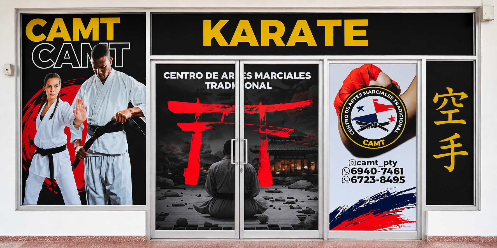
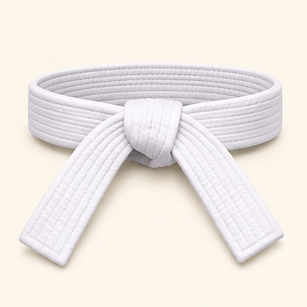
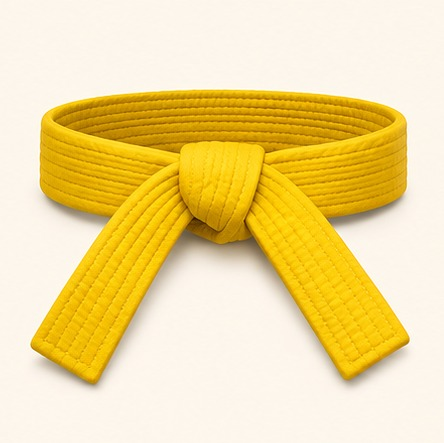
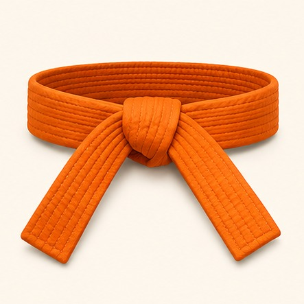
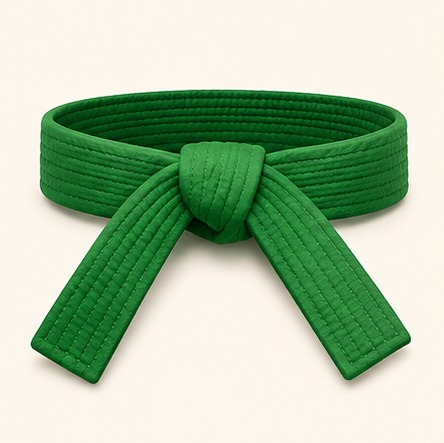
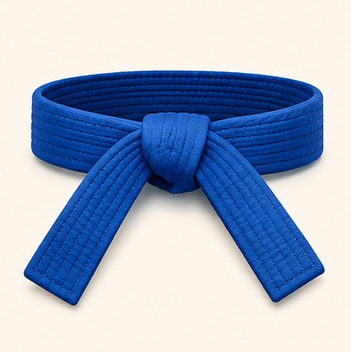
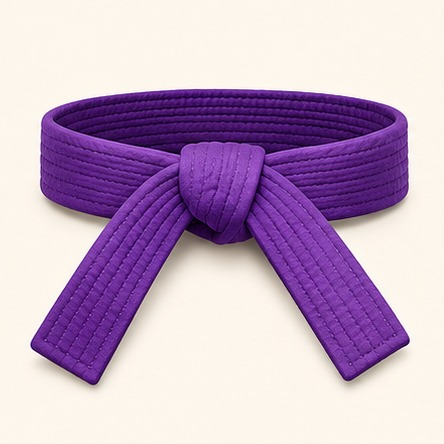
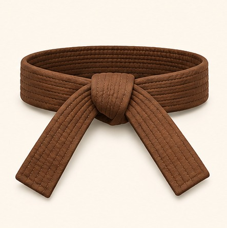
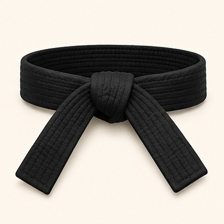

Karate Shotokan tradicional en Ciudad de Panamá.Traditional Shotokan Karate in Panama City.
Historia y filosofíaHistory and philosophy
Tradición, carácter y desarrollo personal.Tradition, character and personal development.
Ubicación y horariosLocation and hours
Vía Brasil, Display Plaza, Local 8
Detrás de Alfombras MundialesBehind Alfombras Mundiales
Ciudad de Panamá, Panamá
Ver ubicación en Google MapsView location in Google Maps
Sábado: 10:00 a. m. – 12:00 p. m. (hora de Panamá). Horario regular pendiente de confirmación.Saturday: 10:00 AM – 12:00 PM (Panama time). Regular training hours pending confirmation.
EntrenamientoTraining
Kihon · Kata · Kumite
Cinturones y progresiónBelts and progression
Los colores y requisitos varían según la organización. Esta guía es ilustrativa; el sistema CAMT está pendiente de confirmación.Colors and requirements vary by organization. This guide is illustrative; the CAMT system awaits confirmation.
Pasa el cursor o toca un cinturón para conocer las habilidades.Hover or tap a belt to explore its skills.

BlancoWhiteInicioBeginning
Posturas básicas, equilibrio, saludo y primeros bloqueos y golpes.Basic stances, balance, etiquette and introductory blocks and strikes.

AmarilloYellowFundamentosFoundations
Técnicas básicas más precisas, desplazamientos y secuencias iniciales de kata.More accurate basics, stepping and introductory kata sequences.

NaranjaOrangeDesarrolloDevelopment
Coordinación de combinaciones, transiciones de kata y distancia en ejercicios con compañero.Coordinated combinations, kata transitions and distance in partner drills.

VerdeGreenCrecimientoGrowth
Estabilidad, potencia controlada, ritmo de kata y defensa en kumite básico.Stability, controlled power, kata rhythm and basic kumite defense.

AzulBlueProgresoProgress
Combinaciones fluidas, precisión de kata, control de distancia y tiempo en kumite.Fluid combinations, kata precision, distance and timing in kumite.

MoradoPurpleConsolidaciónConsolidation
Técnicas complejas, aplicación de kata y adaptación táctica con autocontrol.Complex techniques, kata application and tactical adaptation with self-control.

MarrónBrownPreparación avanzadaAdvanced preparation
Fundamentos sólidos, kata avanzado, kumite controlado y preparación integral para el siguiente nivel.Strong fundamentals, advanced kata, controlled kumite and comprehensive preparation for the next level.

NegroBlackEstudio continuoContinued study
Dominio consistente de fundamentos, kata y kumite; criterio, respeto y aprendizaje continuo.Consistent command of basics, kata and kumite; judgment, respect and continued learning.